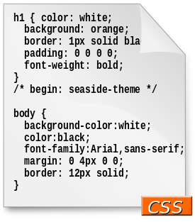

¿Qué es CSS3?
Hojas de estilo en cascada (o CSS, siglas en inglés de Cascading Stylesheets) es un lenguaje de diseño gráfico para definir y crear la presentación de un documento estructurado escrito en un lenguaje de marcado. Es muy usado para establecer el diseño visual de las páginas web, e interfaces de usuario escritas en HTML o XHTML; el lenguaje puede ser aplicado a cualquier documento XML, incluyendo XHTML, SVG, XUL, RSS, etcétera. También permite aplicar estilos no visuales, como las hojas de estilo auditivas.
Junto con HTML y JavaScript, CSS es una tecnología usada por muchos sitios web para crear páginas visualmente atractivas, interfaces de usuario para aplicaciones web, y GUIs para muchas aplicaciones móviles (como Firefox OS). CSS está diseñado principalmente para marcar la separación del contenido del documento y la forma de presentación de este, características tales como las capas o layouts, los colores y las fuentes. Esta separación busca mejorar la accesibilidad del documento, proveer más flexibilidad y control en la especificación de características presentacionales, permitir que varios documentos HTML compartan un mismo estilo usando una sola hoja de estilos separada en un archivo .css, y reducir la complejidad y la repetición de código en la estructura del documento.
La separación del formato y el contenido hace posible presentar el mismo documento marcado en diferentes estilos para diferentes métodos de renderizado, como en pantalla, en impresión, en voz (mediante un navegador de voz o un lector de pantalla, y dispositivos táctiles basados en el sistema Braille. También se puede mostrar una página web de manera diferente dependiendo del tamaño de la pantalla o tipo de dispositivo. Los lectores pueden especificar una hoja de estilos diferente, como una hoja de estilos CSS guardado en su computadora, para sobreescribir la hoja de estilos del diseñador. La especificación CSS describe un esquema prioritario para determinar que reglas de estilo se aplican si más de una regla coincide para un elemento en particular. Estas reglas, aplicadas con un sistema llamado en cascadas, las prioridades son calculadas y asignadas a las reglas, así que los resultados son predecibles.La especificación CSS es mantenida por el World Wide Web Consortium (W3C). El MIME type text/css está registrado para su uso por CSS descrito en el RFC 2318 (March 1998). El W3C proporciona una herramienta de validación de CSS gratuita para los documentos CSS.

Niveles
CSS se ha creado en varios niveles y perfiles. Cada nivel de CSS se construye sobre el anterior, generalmente añadiendo funciones al previo. Los perfiles son, generalmente, parte de uno o varios niveles de CSS definidos para un dispositivo o interfaz particular. Actualmente, pueden usarse perfiles para dispositivos móviles, impresoras o televisiones.
CSS1
La primera especificación oficial de CSS, recomendada por la W3C fue CSS1, publicada en diciembre 1995, y abandonada en abril de 2008.
Algunas de las funcionalidades que ofrece son:
*Propiedades de las fuentes, como tipo, tamaño, énfasis.
*Color de texto, fondos, bordes u otros elementos.
*Atributos del texto, como espaciado entre palabras, letras, líneas, etcétera.
*Alineación de textos, imágenes, tablas u otros.
*Propiedades de caja, como margen, borde, relleno o espaciado.
*Propiedades de identificación y presentación de listas.
CSS2
La especificación CSS2 fue desarrollada por la W3C y publicada como recomendación en mayo de 1998, y abandonada en abril de 2008.
Como ampliación de CSS1, se ofrecieron, entre otras:
*Las funcionalidades propias de las capas (< div>) como de posicionamiento relativo/absoluto/fijo, niveles (z-index), etcétera
*El concepto de "media types".
*Soporte para las hojas de estilo auditivas.
*Texto bidireccional, sombras, etcétera.
CSS3
A diferencia de CSS2, que fue una única especificación que definía varias funcionalidades, CSS3 está dividida en varios documentos separados, llamados "módulos". Cada módulo añade nuevas funcionalidades a las definidas en CSS2, de manera que se preservan las anteriores para mantener la compatibilidad. Los trabajos en el CSS3, comenzaron a la vez que se publicó la recomendación oficial de CSS2, y los primeros borradores de CSS3 fueron liberados en junio de 1999.
Debido a la modularización del CSS3, diferentes módulos pueden encontrarse en diferentes estados de su desarrollo, de forma que a fechas de noviembre de 2011, hay alrededor de cincuenta módulos publicados, tres de ellos se convirtieron en recomendaciones oficiales de la W3C en 2011: "Selectores", "Espacios de nombres" y "Color". Algunos módulos, como "Fondos y colores", "Consultas de medios" o "Diseños multicolumna" están en fase de "candidatos", y considerados como razonablemente estables, a finales de 2011, y sus implementaciones en los diferentes navegadores son señaladas con los prefijos del motor del mismo.